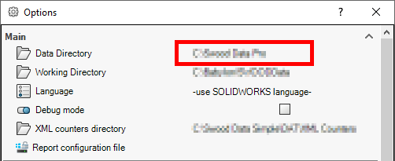

Overview
The Swood Data Directory contains the libraries (Materials, Frames, SwoodBoxes, Connectors, etc.) as well as the report files used by Swood.
Note that this location is customizable and can be defined locally or pointed to a mapped server directory.
How to Find Your Swood Data Directory
You can find the location of the Swood Data Directory by opening SolidWorks, then using the top menu to navigate to Tools > SWOOD Design > Settings.
Please make sure to restart SolidWorks if the Swood Data Directory is changed.
